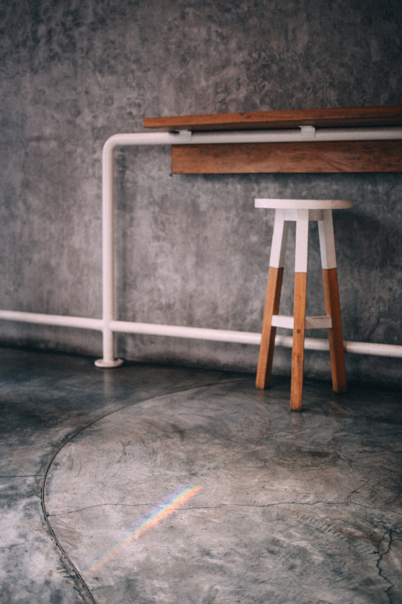
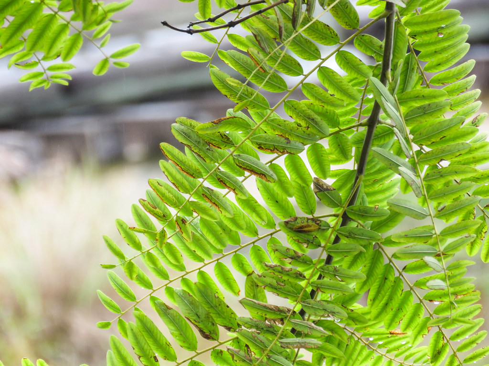
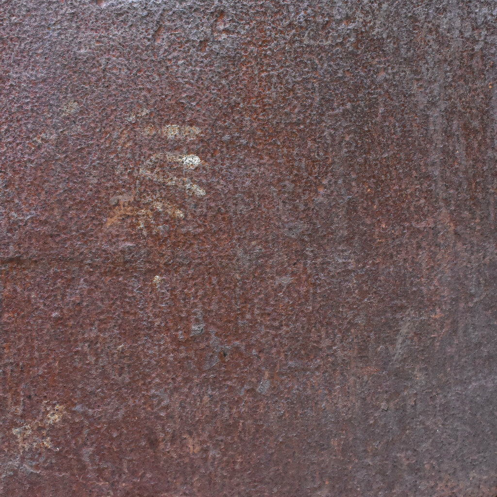

カット
カット
襟足の美しさにこだわり、アイロンを使わなくてもドライヤーだけで形が決まるスタイリング設計を得意としています。朝の時短にもつながるカットを心がけています。
カフェと思って入ったら、素敵なヘアサロンでした
SWEY 吹田店は、ニューヨークの廃墟ビルをイメージしたインダストリアルな内装に、観葉植物の緑がアクセントとして映える空間づくりを大切にしています。コンクリートや鉄の質感が生む少し硬派な雰囲気の中に、植物のやわらかな緑と、店内に流れる音楽が心地よい時間を添えます。「カフェだと思って入ったら美容室だった」というお声をいただくことも多く、吹田の街で少し特別な時間をお過ごしいただける場所を目指しています。

インダストリアル内装(イメージ)

観葉植物(イメージ)

ヴィンテージ家具・照明(イメージ)

店内全体の雰囲気(イメージ)
気さくで、お客様との会話も楽しい時間に。KOTAが大切にしているのは、技術はもちろんのこと、お店に来てくださるすべての方にリラックスして過ごしていただくことです。緊張せずに何でも相談できる距離感も、このお店らしさのひとつです。
襟足の美しさにこだわり、アイロンを使わなくてもドライヤーだけで形が決まるスタイリング設計を得意としています。朝の時短にもつながるカットを心がけています。
染めたての鮮やかさだけでなく、色が落ち着いていく過程までいつも綺麗な色味を保てるよう、カラー選定にこだわっています。
お一人お一人の髪質やご希望に寄り添った丁寧な対応を心がけ、パーマにもご満足いただいているというお声をいただいています。